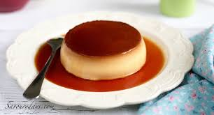

Bánh Flan là một loại bánh tráng miệng đặc trưng của Châu Âu được nhiều người yêu thích đặc biệt là giới trẻ. Thành phần của bánh Flan là lớp kem caramel mềm mịn phủ lên mặt bánh, kết hợp với hỗn hợp trứng, sữa và đường tạo nên một hương vị độc đáo và đầy mê hoặc.
Nhiều người cho rằng, bánh flan thuộc ẩm thực Pháp, có nguồn gố từ nước Pháp nhưng thực chất nguồn gốc của món bánh này có từ rất xưa từ thời La Mã cổ đại. Món bánh nhẹ nhàng như mây và tan trên đầu lưỡi này đã theo chân những người La Mã đến Châu Âu trong hành trình chinh phục Châu Âu của họ.
bởi Nguyễn Trọng Tín